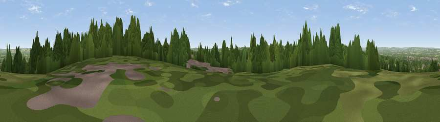

Viewpoint near Brenchley
#21300 in England · top 16% of its area beats it · near BrenchleyThe view, rendered

A 360° render of this exact spot computed from the terrain model, tree cover and land cover — summer colours, afternoon light, calibrated against photographs of famous viewpoints. Real trees, hedges and buildings will differ in detail.
The panorama
Grey silhouette: terrain skyline in each direction (720 bearings, Earth curvature and refraction included). Dashed green: skyline with trees (+15 m) and buildings (+8 m) as obstacles. Blue strip: how far the ground is visible on each bearing.
Where the view opens
Wedge length = distance to the farthest visible ground on that bearing (vegetation-aware). Rings at 10, 25 and 50 km.
What fills the view
43% grassland · 40% woodland · 13% cropland · 3% built-up ·
Angular shares of the visible panorama (visual magnitude), not map area. Landscape diversity 0.50 (0–1 Shannon).
Key numbers
More beautiful places nearby
The staircase of upgrades: each row has a higher view potential than everything closer. Driving times are estimates from straight-line distance, calibrated against real road routing — check an actual route before setting out.
| Place | Direction | Drive | Score |
|---|---|---|---|
| Viewpoint near Brenchley | ENE · 0 km | ~1 min | 55.0 |
| Birchetts Hill | N · 10 km | ~19 min | 56.3 |
| Viewpoint near Bidborough | W · 11 km | ~20 min | 57.2 |
| Viewpoint near Shipbourne | NW · 15 km | ~28 min | 69.1 |
| Viewpoint near Westwell | E · 31 km | ~48 min | 72.2 |
| Viewpoint near Fairlight | SSE · 35 km | ~53 min | 74.7 |
| Viewpoint near Fairlight | SSE · 35 km | ~54 min | 75.1 |
| Viewpoint near Fairlight | SSE · 36 km | ~54 min | 79.0 |
51.15421, 0.39908 · source: screening · position refined by local search. Computed location — check access rights before visiting.